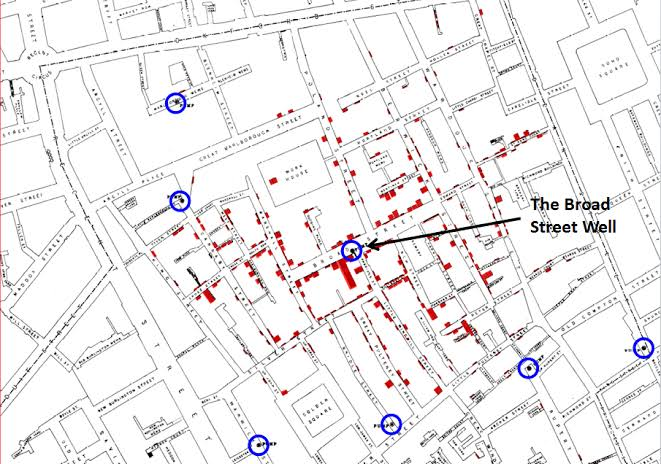

This blog post is a close reading of the history of data visualisation
29 July 2020
With the brief history of data visualisation- Friendly provides an overview of the development of the different data visualisation like what shaped it and how it developed. Friendly points out that there is a rich history behind data visualisation than we think (Friendly 2008: 1). The result of that Friendly points out that data visualisation stem from concrete and practical goals, the goal to see the relations and phenomena in multiple and different ways. The development and use of the graphical methods relies or is based on the technology, data collection and statistical theory. Friendly points out that statistical graphics and data visualisation, we often view as modern developments in statistics but if we were to look into the roots and the history of graphic representation, it dates back to pre-17th century. With the development in technology mathematical theory and practice: it allowed for a broader use of statistical and data visualisation.
Friendly looks at recounting and revisiting the history of data visualisation further questions what the reason behind the development of data visualisation was, what its relation to other forms of data visualisations. Data visualisation as form of graphic visualisation dates back to pre-17th century where the visualisation was maps and diagrams (Friendly 2008: 3). The pre-forms of visualisation stemmed from geometric diagrams in tables of the position of stars and celestial bodies in the making of maps which were to aid in navigation and exploration (Friendly 2008).
In this specific period; data visualisation was concerned with measurement-time, distance and space. This data visualisation period expanded in theory and the rise of practical applications – the rise of analytical geometry and coordinate systems (Friendly 2008: 4-5).
New data representations like the isoline and contours were invented, and thematic mappings of physical quantities were created (Friendly 2008: 7). There was also a rise of abstract graphs, graphs of functions became more widespread along with the early beginnings of statistical theory.
1800-1850 saw the growth of the graphical forms, statistical graphics and thematic mappings. This marked the beginning of the modern graphics. The new graphical forms and thematic maps offered multiple new ways to show quantitative information on maps.
This marked the period in which there were so many different innovations in statistical graphics and thematic cartography. These were multiple and had different variations. Escaping flatland which was the display of more than two variables at the same time in different ways.
This period saw visualisation graphical innovations. With also the visualisation graphics also looked to new ideas and technology. 1950-1975, this period referred to the re-birth of visualisation. Friendly points out that this was influenced by significant events that allowed for data visualisation to be used for data analysis as a legitimate branch of statistics and for many more methods and across disciplines.
This period showed a High-D, interactive and dynamic form of data visualisation. During this period the data visualisation had become used in multi-disciplinary research areas. Friendly(2008) further suggest that data visualisation has become more varied and developed at a fast pace. Eventually became more used in a broad range of disciplines.
Using John Snow’s cholera map which was based on Dr Robert Bark’s cholera map of Leeds -1833 which was a representation of the different districts that were affected by cholera. John Snow’ (1855) who created an adaptation of the map of the different regions and districts that were affected by the cholera. John Snow used the map to track and identify the cholera cases on the map. The map displays the possible districts that were affected by the cholera disease and the spreading of cholera. He used the map as a form of data visualisation to record the homes in the different districts that were affected or has invidviudals that died from cholera. The map marked the different districts but homes that were affected by the cholera. The map indicated the information of the houses of the victim with a dot and representing the source of where the homes were collecting their water from. The denotative level of the map means or is a representation of the city of London that shows and displays the streets and navigation. The connotative level means and tells the story using the data to represent the cholera outbreak and representing the correlation between the water pump and the cholera disease. The map is a representation of the city of London and the homes that had people affected by the cholera disease. With data visualisation being speculative and it is the same with representation it is constructed. With the snow’s map of cholera outbreak. It only shows the specific districts that were affected. Its focus is only on the cholera disease; the resulting data are also focused on specific districts.
Image of the John Snow map visualising the cholera outbreak in the city of London in 1855